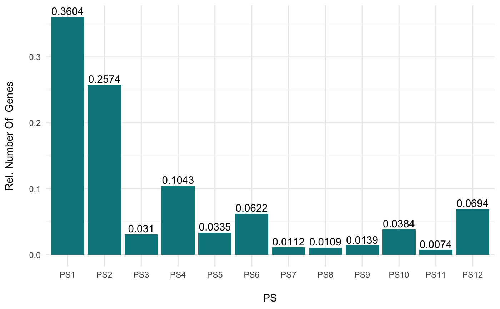
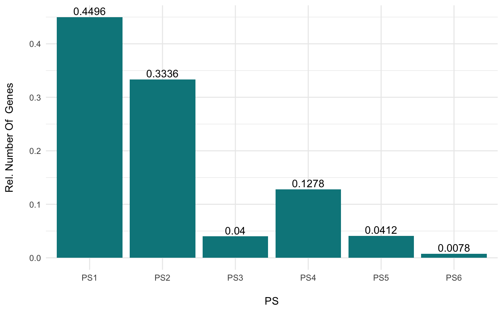

R/PlotDistribution.R
PlotDistribution.RdThis function plots the frequency distribution of genes within the corresponding phylostratigraphic map or divergence map and can be used to fastly visualize the PS or DS distribution of a given phylostratum vector or divergence-stratum vector.
PlotDistribution( PhyloExpressionSet, legendName = "PS", as.ratio = FALSE, use.only.map = FALSE, xlab = NULL, ylab = NULL )
| PhyloExpressionSet | a standard PhyloExpressionSet or DivergenceExpressionSet object. |
|---|---|
| legendName | a character string specifying whether "PS" or "DS" are visualized. |
| as.ratio | a boolean value specifying whether the relative frequencies instead of absolute frequencies shall be plotted. |
| use.only.map | logical value indicating whether or not a Phylostratigraphic Map or Divergence Map should be passed to the |
| xlab | label of the x-axis. |
| ylab | label of the y-axis. |
a barplot showing the phylostratum distribution or divergence-stratum distribution of a given numeric vector containing PS or DS values.
The frequency distribution of all genes or a subset of genes might be of interest for subsequent analyses.
For Example:
Filtering genes using gene cluster algorithms can result in different groups (classes) of genes. For each gene group the phylostratum or divergence-stratum distribution can be visualized using this function and can be compared between different groups.
This analysis allows to compare different gene expression profiles (or gene groups in general) based on their evolutionary origins or evolutionary relationships.
Hajk-Georg Drost
# load PhyloExpressionSet data(PhyloExpressionSetExample) # plot the phylostratum distribution of a PhyloExpressionSet PlotDistribution(PhyloExpressionSetExample)# plot the relative frequency distribution of a PhyloExpressionSet PlotDistribution(PhyloExpressionSetExample, as.ratio = TRUE)# a example for visualizing the PS distribution for a subset of genes PlotDistribution(PhyloExpressionSetExample[sample(20000,5000) , ], as.ratio = TRUE)